「そんなバカな...」
MV公開されました＊＊
観てくださいました？
観てくれたかな？？
コメディです(＊^ω^＊)乃木坂ちゃんがコメディ！
ひめたんは白鳥高校の生徒。
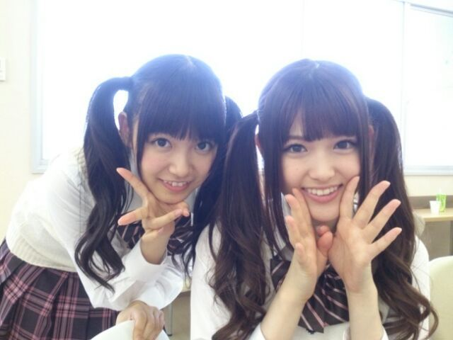
白鳥！
[はくちょう]って読んでたけど
[しらとり]なのかな。白鳥高校。
王道アイドル部とゆーことで
部員は全員ツイン∩^^∩
中田マネージャーにもツイン薦めたのになー(笑)
もうね、
これはDVDも観るしかですよー♪
Type-B盤。よろしくねー♪♪
これはネタバレになるんだけど
ずーさんが「ポジピース」したあとの
若月がもうツボです。ぜひテレビの液晶で。
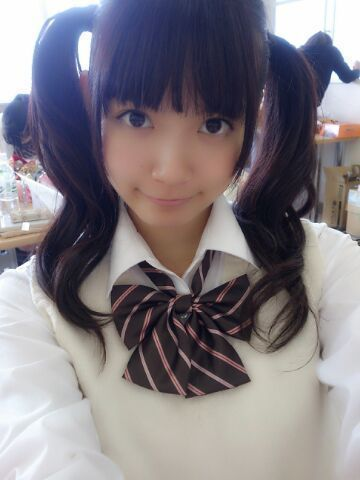
いつもコメントありがとうございます(＊´ `＊)
イベントの感想とか番組の感想とか
お勉強になります！
おかげさまで
２期生ちゃんにも
仲良くしてもらってまーすよー♪

 僕も一人でトイレ行くのが寂しくて
僕も一人でトイレ行くのが寂しくて
友達に付いてきてもらいたいど
恥ずかしくて言えません(泣)
付いてきてきてもらういい方法おしえてー！！そうだよね？寂しいよね！めっちゃわかるよー
おもいっきりお茶目に
「ねー誰かー？」って誘ってみるとか...
実はなかなか高度な技なのかな。
ひめたんが乃木坂の曲で特に好きなのは？ぐるぐるカーテン
やさしさなら間に合ってる
今回のシングルなら
そんなバカな...も好きです！
ユニットで歌わせていただいてるとゆーことで
海流の島よ、コウモリよ も愛着が沸きます。
ひめたんが可愛いすぎて
推し変しそうにないのが悩みなんだけど
どうしたら良いかな？笑いや悩みじゃないけどｗそれは大変だー(｀・ω・´)
って引っかかると思ったか！んへへ
そんなこと言っていただけるともう嬉しくて
お空でも飛んでしまいそうです。
ひめたんビームは
ひめたんしか出せないんですか？
これが気になって最近は
授業中も安心して寝ることができません笑じゃあ答えるまあかな(笑)
学生のうちはずっと気にしててください
卒業するまでは解決しちゃだめだからね！
「まーどっちでもいっかー」は許さんよ！
ひめたんが着たい衣装か
握手会でしてみたい格好を教えてほしいー1stの個人PVで着たみたいな
がちな着ぐるみが着たい！頭と足が重いやつ！
......と、個人PVでは確か
頭はかぶってなかったのか。
ひめたんは着ぐるみ以外に
コスプレは持ってないの？今はもってないなー
ちっちゃい頃は東京ミュウミュウの
ミュウイチゴのコスプレありましたよ( ω )
東京ミュウミュウ大好きだったねん
少し気が早いけど...
ひめたんはサンタになりたい？
それともサンタに来てほしい？ 来てほしい。
サンタさんの裏側は知りたくないです
どうやってプレゼントを仕込むのかとか
絶対知りたくない。
まさかサンタさんは
おもちゃ屋さんのレジに並んだりとか
ありえないありえない。ありえない......
ひめたんの好きなフルーツはー？？いちご*\(^o^)/*
ねえ、真夏ブログの写メ見たけど
ひめたんあのポーズ何やってんの？真夏さんブログにある
ひめたんの謎のポーズが気になります
何のポーズか教えて あのシチュエーションがまったく思い出せない
のびーってしてたら
カメラが向けられてたって感じだったような......
乃木坂46の歌でひめたんの
ソロパート部分を教えて。コウモリよ
◎2番A' 「守りたいのは愛しき人」
あとはユニット曲なんかだと
少人数でのパートがあったりするので
よかったら聴き分けてみてください
コウモリよ と そんなバカな...... では
歌い方もぜーんぜーん違うのよー♪
ごめんね、短いけど
今日はこれて終わろうかな。
寒くなってきたから
あったかくして寝るんだよー( ω )
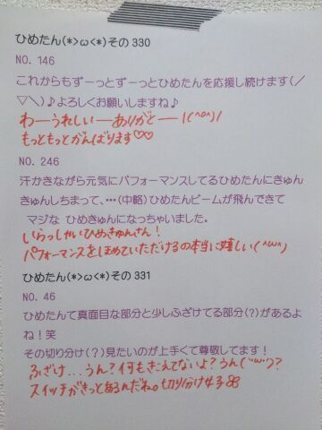
(＊´・ω・＊)
ぼろーん！ひめたんです！
今日の記事もとっ散らかっちゃった！
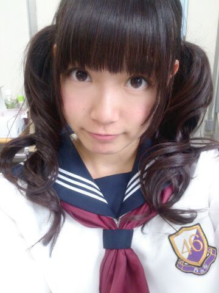
昨日はサイン会＆お茶会でした♪♪
来てくださった方
ありがとうございました(*^O^*)
どっちもはじめてだったから
どんな感じになるんかなーって思ったけど
とっても楽しかったなー
これからもこんなイベント
あったらいいのにな＊
今回ははずれちゃったーっていう方も
次は当選しますように......
いきなり誰かちゃんに抱きつかれたあああ
と思ったら
純奈たん(伊藤純奈ちゃん)と
れなち(山崎怜奈ちゃん)でした(〃ω〃)
ひめたんさん見ると
抱きつきたくなるんですーだって！
なんてかわいーんだ(〃ω〃)らぶ
そういやこの前
みりりん(渡辺みり愛ちゃん)が
おみやげですって言って
かわいらしいストラップをくれたのー(〃ω〃)
もうどうしよう。ほんとにかわいい。
今度おねーちゃんも どっか行ったら
なんかおみやげ持って帰るからね♪
ありがとう大好きだよいもーとちゃーん！
そして
ゆっきーな＆せっちゃんは
昨日が最後で卒業。
卒業って言葉はなんか重みがあって
ちょっと暗い気持ちになっちゃうけど
これからもずっとずっと
なかよしだよー∩^^∩
乃木坂ちゃんの現場に遊びに来てね☆
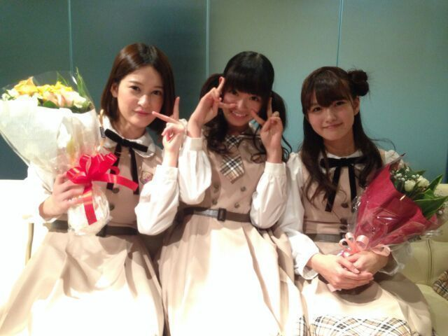
お疲れ様でした。ありがとう！
さらに昨日はガールポップさんに
取材していただきました！
発売はまたお伝えしますっ☆
昨日の乃木どこは
みなさん観ていただけましたかー？
7thのキャンペーンで滝行しました
秋元・衛藤・川後・中元のチーム「ざ」は
なんと岩手の滝へ......
来週も観てね☆
「の」「か」みんな頑張ってたねー
なんだか感動しちゃいました(´；ω；｀)
これが滝のチカラか！恐るべし滝！
バレッタ スタジオ初披露◎
ダンスバージョンだとあんな感じですっ
今までとまた違った
女性らしいおしとやかなダンスなので
ひめたんはぴょこぴょこしないよう必死......
ライブのときもひめたんのこと
探してくれると嬉しいな///
乃木ののにて
7thカップリング曲「そんなバカな......」
解禁されました！
そんなバカな......は
とってもキャッチーなメロディーラインが
かわいらしくてお気に入りの曲(＊・ω・＊)
MVもねとってもとってもかわいいです！

 西の方の人って
西の方の人って
やっぱりマクドナルドのこと
マクドっていうの？？？マクドは関西限定かなー
広島人はマックって言いますよー♪
ひめたんは二期生のみんなから
何て呼ばれてるの？みおちゃんはひめちゃんって呼んでくれるよ！
みりりんはたまに(ノリで？)
おねーちゃんって呼んでくれる///
ひめたんさん、中元さんが多いかなー♪
中元さんなんてそんな、いいのに、ねえー？
学校給食で嫌いな物出るんやけど
先生に無理やり食べさせられる><
ひめたんやったらどーしますか？？小学生の頃はそうだったなあー(´・ω・｀)
朝一に献立チェックしてから
ピーマンとかだったらもう
午前中ずーっとブルーだった。懐かしやー
それでもお残しは許してくれないので
がんばって食べたよー
ひめたんの推しタオル３つ持ってるけど、
もったいなくて開封できずにあるのが
２つあります！ひめきゅんなら全部巻いて
握手会行くべきでしょうか？２つ保存用ってのはアリです(｀・∀・´)
ありがとー♪♪
いくちゃんのキープしてる差し入れを
こっそり食べたらどうなっちゃう？怒るような子じゃないよ＊
ひめたん食べるー？って
カバンから出してくれたこともあります
チョコクランチだったんだけど、チョコが溶けて
クランチがパッケージの底に沈殿しててね......はは
 広島の変わった鍋、
広島の変わった鍋、
または具材ってありますか？あんま思いつかないなー
カキの土手鍋はわりと
どっこの家庭もするんじゃないかな
そして美味しい(*^O^*)
ひとりでお仕事とかって緊張しないの？ひとりの現場は
まだあまり経験したことないけど
そうですねー緊張するね！
マネージャーさんにいつも以上にベッタリする///
僕好きな人できたんやけど
告白した方がいいかな笑笑？答えてください！しーなーよーしなよしなよ絶対しなよー(〃ω〃)
おにゃーのこはきっと待ってるよ。
最近、仕事のせいで肩こりひどいんだけど
これは、ひめたんビームで治りますか？ひめたんびーむよりも
川後Pの肩もみの方が即効性があるかもしれません
みおちゃんの指圧もいいかも。
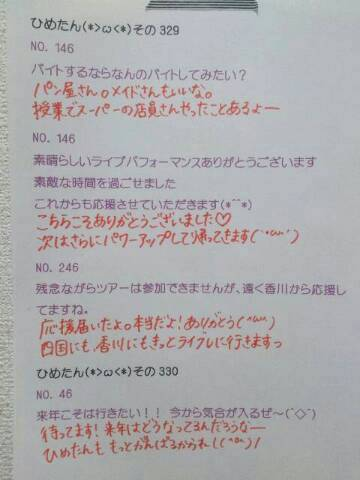
おに魂「乃木坂マスター」のコーナーで
ゆったん(斉藤優里ちゃん)が
ひめたんのブログ読んでくれたー(*^ω^*)
お手洗い付き添うの大概にしなさいと
みんなから言われるのは事実ですがしかしっ
これからも一緒に行ってください
メンバーのみなさん(笑)
そうですいつもそーやっていじられるんです
それも愛だよね。うん？
おたよりどれもおもしろかったー♪♪
(＊´・ω・＊)
45°右に傾けてーこんにちは♪
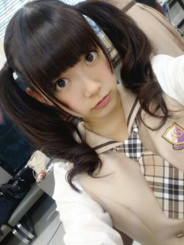
個人PV ダイジェスト盤が
公開されました☆
タイトルは「空へ」
そうですひめたんなんと
お空を飛んだんです*\(^o^)/*
詳しくは
発売されてからのお楽しみとゆーことで......
この前は
衛藤・若月・秋元・川後・飛鳥・中元で
月刊ヤンマガさんの撮影でした☆
発売日とかはまた告知しよっかなーって思うけど
もう！楽しかった！素で笑ってます！
いつもコメントありがとうございます
MJ行ったよーて方は感想ありがとーう♪
お留守番ちーむのみなさんも
オンエア楽しみにしてて下さいっ
ひめきゅんさんに入れてーってお声を
最近たまに聞きます
いらっしゃいませ∩^^∩うぇるかんーむ！
そして急に寒くなってきたけど
ひめたんは元気ですよー
みんなは風邪引いちゃだめだからねっ
さゆにゃんびーむ
ごめんなさいセンスないんです
ごめんなさい本当にごめんなさい......
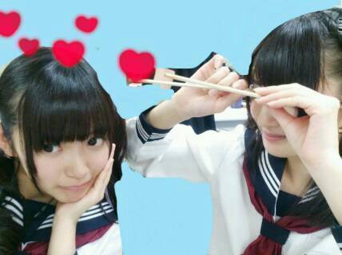
 ひめたんビーム喰らったら、
ひめたんビーム喰らったら、
ゾンビが生き返るって本当ですか！？（笑）そんなこと誰が言ったの？
ねえ誰が言ったの？ねえ(笑)
予告は罰ゲームだったのね。
ずっと気になってました。
握手会で披露してくれる？（笑）日村さんのトドのモノマネのものまねかしら。
しません。絶対しませんっ
だから握手会でも振らないでください( ω )
あの、これまじで、まじトーンで言ってます
だからフリじゃないからまじだからっ！
ひめたんは辛い食べ物はOKなんですかー？？OKだとしたら何が好きですか？過度なやつは無理......だと思...います
舌が ひーっ！ ってなる。
熱いのもだけど、きっとみんなより
舌が弱いんだと思うのよ
この前の大会でね、
初めて全国大会に出ることが決まったの
だからお祝いしてほしいなーと思って...わーおめでとーう＼(^O^)／
結果も大事だけど、何より自分を大事にして
最後まで全力を尽くしてください
応援してまーす♪
ひめたんビームの威力の単位ってなんですか？
へくとぱすかる？でしべる？力ならボルト？
電流......アンペア？
そんな難しい言葉を遣うのは
ひめたんらしさに欠けると思うのよ。
だから......なんだろう１びーむ？

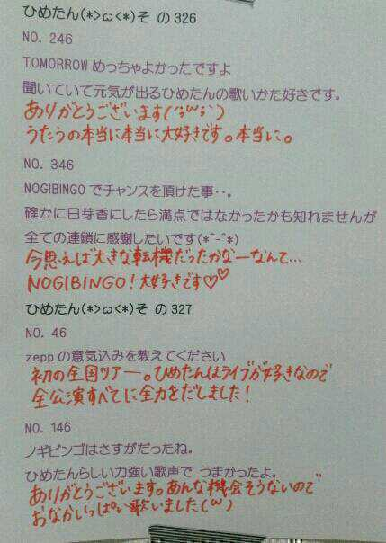
そして、公式から発表もあったように
乃木坂46から
ふたりのメンバーが卒業します。
ゆっきーな、せっちゃん
今まで本当にお疲れ様でした。
ゆっきーな(柏 幸奈ちゃん)は
学業のためということでしたが
私もゆっきーなも学校組。
ゆっきーなの大変さを
全てわかってあげられたわけでは
ないかもしれないけど
でもやっぱり学業との両立って大変なんだよね。
ゆっきーなは弱音を吐くような子じゃないので
どんな時もニコニコと事をこなしていたけど
裏ではきっと辛い思いも
あったんじゃないかなって。
普通なら自分のことで
精一杯になっちゃいそうなのに
現場では「みんなの迷惑にならないように」とか
いろんなことに気を遣っていて
優しい子だなー
そんなこと気にしなくていいのになって
いつも思ってました。
いつものほほーんとしてるのに
ライブのパフォーマンスになると
誰よりもキレがあって
心からライブが好きなんだよね。
そんなゆっきーなのパフォーマンスを
間近で見れて幸せでした。
せっちゃん(宮澤成良ちゃん)は
とにかく意識が高いがんばり屋さん。
ストイックで、努力家で、
せっちゃんこんなに頑張ってるんだーって
いつも頭が上がらなかったよ。
せっちゃんはスラッと背が高くてスタイルがよくて
お顔もお人形さんみたいにキレイで
性格もクールなのかなって最初思ったけど
話してみると天然で、ふわふわしてて
そんなギャップがまた魅力的。
乃木坂の中だけじゃなくどこへ行っても
唯一無二の存在なんじゃないかな。
せっちゃんも同じで
頑張ってるところとか辛いことを
誰にも見せないような子。
でも大きな悩みになる前に
もっとお話聞いてあげられたらよかったな。
今のせっちゃんは自分のやりたいことが
ハッキリと自分の中にあるんだよね
少し前にそのことを話した時に
せっちゃんのお顔がとってもキラキラしてて
これは応援してあげなくちゃって思いました。
ふたりとも
将来のビジョンをちゃーんと描いてて
本当に尊敬します
自分はこうしたい！って
強い意志を持っているからなのかな
すごくかっこいいよね(*^O^*)
今回の卒業も把握はしてたけど
やっぱり活字にして発表された途端に
急に実感が沸いてきて寂しい。
同じグループで活動するメンバーとして
本当はもっと一緒に頑張りたいし
引き止めたい気持ちもあるけど
悩んで悩んで決めたことだと思うから
ひめたんは笑顔で見送ることが大事だよね......
ふたりが将来の夢に
一歩近づく為の卒業だって考えたら
17日も晴れやかに迎えられるのかなあ。
違う道にはなってしまうけど
これからもずっとずっと応援するし
ひめたんももっと頑張らなきゃねっ！
乃木坂を離れても
いつまでも乃木坂ファミリーで
ひめたんの大切なお姉さんです
ゆっきーな、せっちゃん
卒業 おめでとう。
(´;ω;｀)
今日はMUSIC JAPAN、Rの法則の収録でした☆
まいやんちゃーんっ*\(^o^)/*
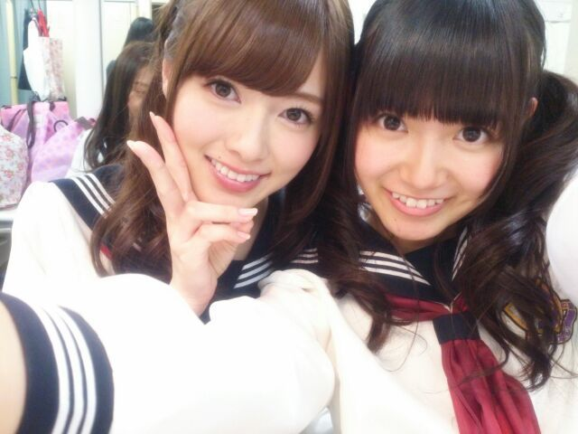
MJ観に来てくださった方
ありがとーう！バレッタいかがだったでしょうか？
選抜メンバーとして
憧れの存在であるPerfumeさんと共演することが
芸能界での目標のひとつだったので
今日 MJさんで叶って光栄です///
少しですがお話もできて
ますます大好きになりました。
これからも応援しています！
ら
Rの法則はオンエアを楽しみにしててください♪
昨日の乃木どこ
見てくださった方ありがとー( ^ω^ )
いやーみんな面白いなー
キワどい答えがいっぱいで
どきどきしましたね！ふふへ
来週は7thキャンペーン企画っ
いつもコメントありがとうございます
お仕事の合間とか、学校の合間とかに
コメント増えてるともうわくわくしちゃう∩^^∩
ホットドリンクたくさん教えてもらって
なんだかほっこりしました＊
ひめたんは猫舌だからね
あったかいの作ってから
５分置いたくらいが飲み頃。
変わりダネもあったから作ってみるね
ジンジャーミルクティも
是非飲んでー( ´ ▽ ` )
＼ 今日はセーラー服でした ／
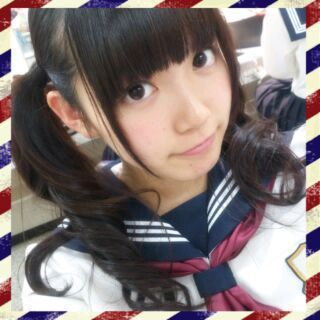

 ひめたんが着てたうさみみの
ひめたんが着てたうさみみの
おりぼんがついてるもこもこの
着ぐるみ売ってるところ分かったの
おそろいにしてもいい ？わーい\(^O^)/
おそろいにしたいよー♪
動物さんいろーんな種類いたから
ほかの動物さんにしても楽しいかもねっ
洋服のブランドはどこが好き？LODISPOTTO、earth music & ecology、
ワンピースならLIZ LISA
とか好きだよー☆
ひめたんは普段遊ぶときのメイクは
濃いの？薄いの？濃ゆくしたいけどできなくて
結局ナチュラルになってしまう(´・ω・｀)
ひめたんも濃ゆいメイク修得したい......
ひめたんって、目が大きいよね〜♪
メイクのコツとかあるの？全部メイクさんにおまかせよー
あとはなんだろう。
目のまわりを軽くマッサージしたら
それだけで変わると思うよ！
ひめたんが文化祭でやりたい出し物はなに？メイド喫茶の呼び込み係(´ω`)
メイド服着たいけど
お店を守るのはちょっとあれだから
「みんなー来てねー」ってやつやりたい。
ひめたんは偶然空見上げて、
流れ星見たことある？そこまでロマンチックな感じじゃ
なかったかもしれないけど
流れ星みたことあるよー(*^O^*)
ひめたんは ひめパパと 良く話すのかな？よくはなすよー♪
ぱぱと姉妹たちはなかよしです！
初の選抜入りで仲良しの生ちゃんから
何かアドバイスやお祝いの言葉は貰ったかな？発表された直後も、収録終わったあとも
一緒に喜んでくれました(^O^ )
アドバイスかあーなんだろうー
いくちゃんに限らないけど
身をもっていろいろと学ばせてもらってます
百聞は一見にしかずってこーゆーこと♪
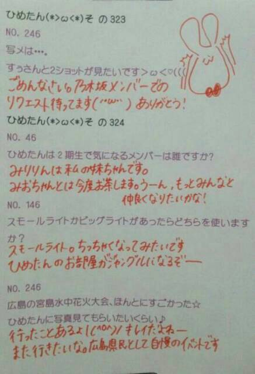
ある企画ゆーて
みんなブログに書いてたね(笑)
そうですナタリーさんのバック８特集！
ひめたん初のソログラビア( ∀ )/
とってもいい感じに撮っていただきました
解禁まで楽しみに待っててねー
その時にやったヘアが
メンバーさんスタッフさんから好評だったり
コメントでも「いいね！」って意見があったので
いままでのくるくるツインもやりつつ
たーまーにゆるふわおろしスタイル
(前回のブログの写め参照)もやろっかなー♪
明日は撮影◎どきどきっ
(＊´・ω・＊)


 ひめたんは、癖っ毛をどう思う？
ひめたんは、癖っ毛をどう思う？  ひめたんがすーっごい人気になって、
ひめたんがすーっごい人気になって、